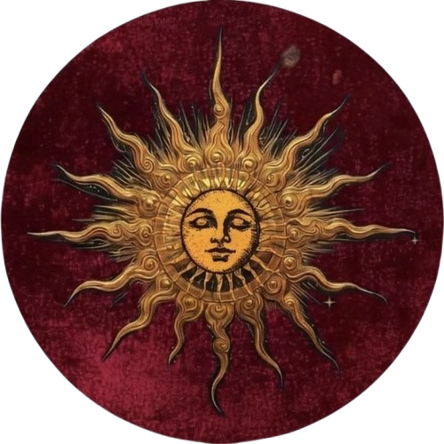

John Galliano
Estilista britânico nascido em Gibraltar, em 1960. Foi diretor criativo da Dior de 1996 a 2011 e ficou conhecido por desfiles teatrais, cheios de referências históricas.

Estilista britânico nascido em Gibraltar, em 1960. Foi diretor criativo da Dior de 1996 a 2011 e ficou conhecido por desfiles teatrais, cheios de referências históricas.
Na coleção de alta-costura da primavera de 1998, John Galliano buscou inspiração na marquesa Luisa Casati, uma das figuras mais extravagantes da sociedade europeia do início do século XX. Em vez de copiar roupas de época, ele transformou a vida dela em moda.
Por isso os looks misturam luxo e fantasia: veludos com bordados dourados, casacos de ópera com acabamento de pelo, rendas, estampas inspiradas no Art Nouveau e muitos acessórios. Cada peça lembra o gosto da marquesa por se transformar em personagem e em obra de arte.
O desfile é lembrado até hoje como um dos momentos mais criativos da alta-costura dos anos 1990.
Luisa Casati dizia que queria ser uma obra de arte viva, e levou isso a sério: criava figurinos dramáticos e transformava cada aparição em espetáculo. Suas festas em Veneza, no Palácio Venier dei Leoni, ficaram famosas.
Artistas e escritores como Jean Cocteau, Erté e Cecil Beaton se encantaram por ela, e seu estilo teatral influenciou a moda por décadas.
É esse espírito exagerado e cheio de fantasia que Galliano levou para as roupas da coleção de 1998.
Nascida em Milão em 1881, Luisa Casati ficou órfã aos 15 anos e herdou uma das maiores fortunas da Itália. Casou-se em 1900 com o marquês Camillo Casati Stampa di Soncino. Mecenas das artes, foi retratada por artistas como Giovanni Boldini e fotografada por Man Ray, e chamava atenção por passear com guepardos e usar cobras vivas como joias. Perdeu a fortuna e morreu em Londres, em 1957, aos 76 anos.